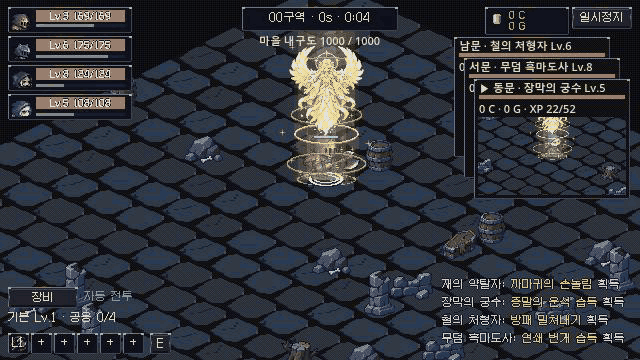

Tracefolio REPORTS & ISSUES
Tracefolio REPORTS & ISSUES 캠프 가디언작업 결과
캠프 가디언작업 결과레벨업 금빛 폭발·별빛·팡파르 연출 강화
검증 대기대장 결과의 레벨 경계마다 금빛 고리·별빛과 짧은 음을 표시하고 마지막 레벨에 전용 팡파르를 재생합니다. 전투 축복도 강화했습니다.
작업 결과
사운드 제작·연결·Godot 임포트·실제 전투/결과 렌더 및 출력 확인 완료. 게임 배포 빌드·사용자 청감 승인은 미확인입니다.
변경 내용
적용 내용
286×82 작은 결과 카드와1.22초 순서를 유지합니다. result_levelup_fx.gd에서 기존 정규화된 PixelFX augment_levelup/icon_gold를 재사용해 초상 주변 금빛 상승 고리·별빛·반짝임·테두리·게이지 광선과 레벨 업 문구를 표시합니다. 레벨 경계를 실제 성장 곡선으로 계산해0.16초 이상 간격으로 짧은 소리/폭발을 표시하고 마지막 도달 레벨에는 더 큰 별빛과 전용 팡파르를 연결했습니다. 레벨이 오르지 않은 결과에는 팡파르를 지급하지 않습니다. 약한 연출은 움직이는 입자/광선을 빼고 얇은 테두리/문구로 표시합니다. 전투 중 여신 축복은 기존 원본/타이밍을 유지하고 같은 금빛 고리와 새 레벨업음을 더했습니다. tools/audio/generate_levelup_feedback.py로0.72초 상승3음/화음/공기/부드러운 충격 팡파르와0.13초 짧은 레벨 악센트를 각3변형 합성했습니다. audio/source/levelup-feedback에 의도·1차/2차24bit 마스터·지표를 보존합니다. PixelFX 라이선스/원본과 기존 음향 원본을 유지하며 디자인 기준 내 변경으로 지침 추가 없음.
검증
48kHz PCM WAV6종,유한값/양끝0,true peak 팡파르 약-5.2dBTP·짧은 음 약-14.9dBTP. sound listen.py로1차/2차 파형·스펙트럼·음량을 확인했습니다. 0.13초 파일의--curve는 도구 STFT 길이 제약으로 실패해,전체 파일의 파형/지표 검사를--curve 없이 완료했습니다. 실제 Godot4.7.2/GTX970/OpenGL/640×360/30FPS/357프레임 렌더. RESULT_AUDIO levelups=4 level_ticks=10 fills=4 rewards=0 fanfare=1 locked=false errors=[] 확인. tree_paused=true에서level_up_1.wav playing=true,stream_paused=false,can_process=true. 실제 전투의 여신·금빛 기둥/고리와 결과 카드의 금빛 테두리·별빛·레벨업 문구를 확인했습니다. 녹화는 임시 저장 사용. 자동 테스트 미실행.

남은 사항
사용자 청감/연출 체감 승인과 모든 클래스 조합은 미확인입니다. 기존 user:// 로그·캐시 접근 및 종료 텍스처3개 해제 경고가 남습니다. 게임 배포 빌드 미실행. 중앙 푸시·웹 배포는 별도 확인합니다.
작업 시간
- 제안 시간: 2026-11-17 21:27:31 KST 시작,5~10분 내 제작·연결·실제 출력 확인.
- 실제로 완료된 시간: 제작·연결·Godot 임포트·실제 렌더/음향 확인·MP4/GIF 저장 2026-11-17 21:31:44 KST 완료,실측4분13초. 중앙 등록 시간 별도.
- XERJ: 미사용 — rg·관련 소스·음향 지표·실제 Godot 재생 로그/렌더 확인.